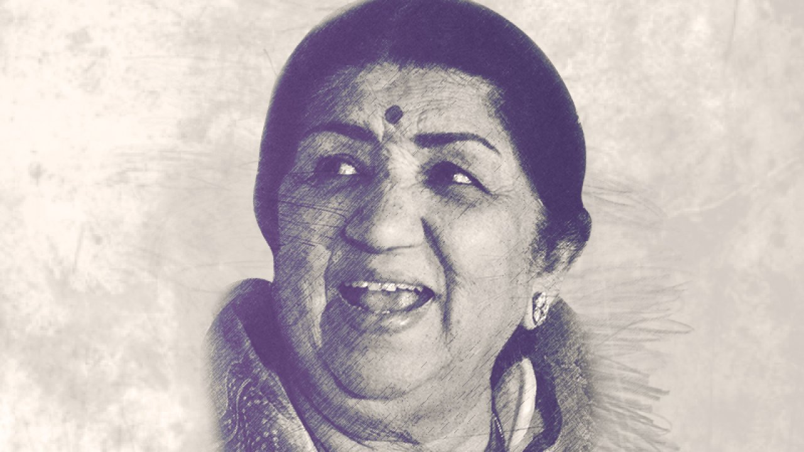

Lata Mangeshkar
The voice of indian music

Lata Mangeshkar (1929-2022)
A short biography of Lata Mangeshkar
- Lata Mangeshkar, (born September 28, 1929, Indore, British India—died February 6, 2022, Mumbai, India).
- legendary Indian playback singer noted for her distinctive voice and a vocal range that extended over more than three octaves.
- Her career spanned eight decades, and she recorded songs for the soundtracks of more than 2,000 Indian films.
- Mangeshkar’s father, Dinanath Mangeshkar, was a noted Marathi stage personality popularly known as Master Dinanath.
- Lata, who was the eldest of five siblings, was introduced to music at an early age.
- She recorded her first song at age 13 for Vasant Joglekar’s Marathi film Kiti Hasaal.
- Mangeshkar was trained from age five by her father, a disciple of the Gwalior gharana
- she was also tutored by maestros such as Aman Ali Khan Sahib and Amanat Khan. As a teenager.
- After Mangeshkar recorded the hit “Uthaye ja unke sitam” in Andaz (1949), her destiny was sealed.
- In 1991 Mangeshkar was credited with having made 30,000 solo, duet, and chorus-backed song recordings in 14 Indian languages between 1948 and 1987.
- She was awarded the Padma Vibhushan, one of India’s highest civilian honours, in 1999, and two years later she became the second film celebrity (the first was Satyajit Ray in 1992) to receive the Bharat Ratna (2001), India’s highest civilian award for performance of the highest order in any field.
- lata ji passed away on 6 February 2022 in Mumbai,india
"As a singer you have to bring the soul to the song"
--Lata Mangeshkar--
If you have time you should read more about this incredible human being on her wiki entry